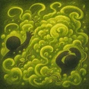
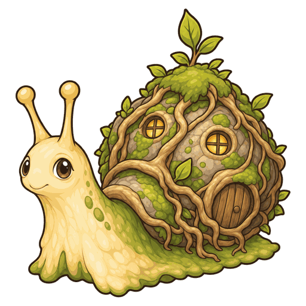
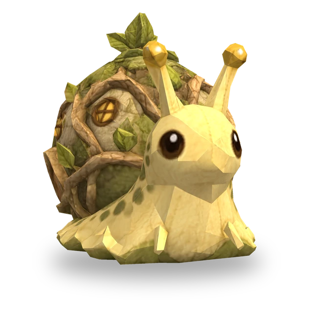
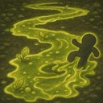

Trująca chmura
Gdy obecny cel jest nie dalej niż 1 pole, nakłada na 2 s Truciznę na wrogów wokół siebie (promień: 1 pole); Trucizna co sekundę zadaje obrażenia magiczne równe 400% Mocy umiejętności. Ta Trucizna się kumuluje.

3D
| Lv. | Zdrowie | Atak | Moc umiej. |
|---|---|---|---|
| 1 | 330 | 16 | 16 |
| 2 | 379 | 18 | 18 |
| 3 | 436 | 21 | 21 |
| 4 | 502 | 24 | 24 |
| 5 | 577 | 28 | 28 |
| 6 | 664 | 32 | 32 |
| 7 | 763 | 37 | 37 |
| 8 | 878 | 43 | 43 |
| 9 | 1009 | 49 | 49 |
| 10 | 1161 | 56 | 56 |
| 11 | 1335 | 65 | 65 |
Zdrowie, Atak i Moc umiejętności rosną o 15% z każdym poziomem (do Lv.11).
No.036
Nakłada na pobliskich wrogów kumulującą się Truciznę, która zadaje obrażenia magiczne, a na każdym polu, z którego schodzi, zostawia trujący ślad zadający obrażenia magiczne.

Gdy obecny cel jest nie dalej niż 1 pole, nakłada na 2 s Truciznę na wrogów wokół siebie (promień: 1 pole); Trucizna co sekundę zadaje obrażenia magiczne równe 400% Mocy umiejętności. Ta Trucizna się kumuluje.

Podczas ruchu zostawia na polu, z którego zszedł, trujący ślad na 3 s. Wrogowie na śladzie co sekundę otrzymują obrażenia magiczne równe 130% Mocy umiejętności. Ponowne zostawienie śladu na tym samym polu odnawia jego czas trwania.